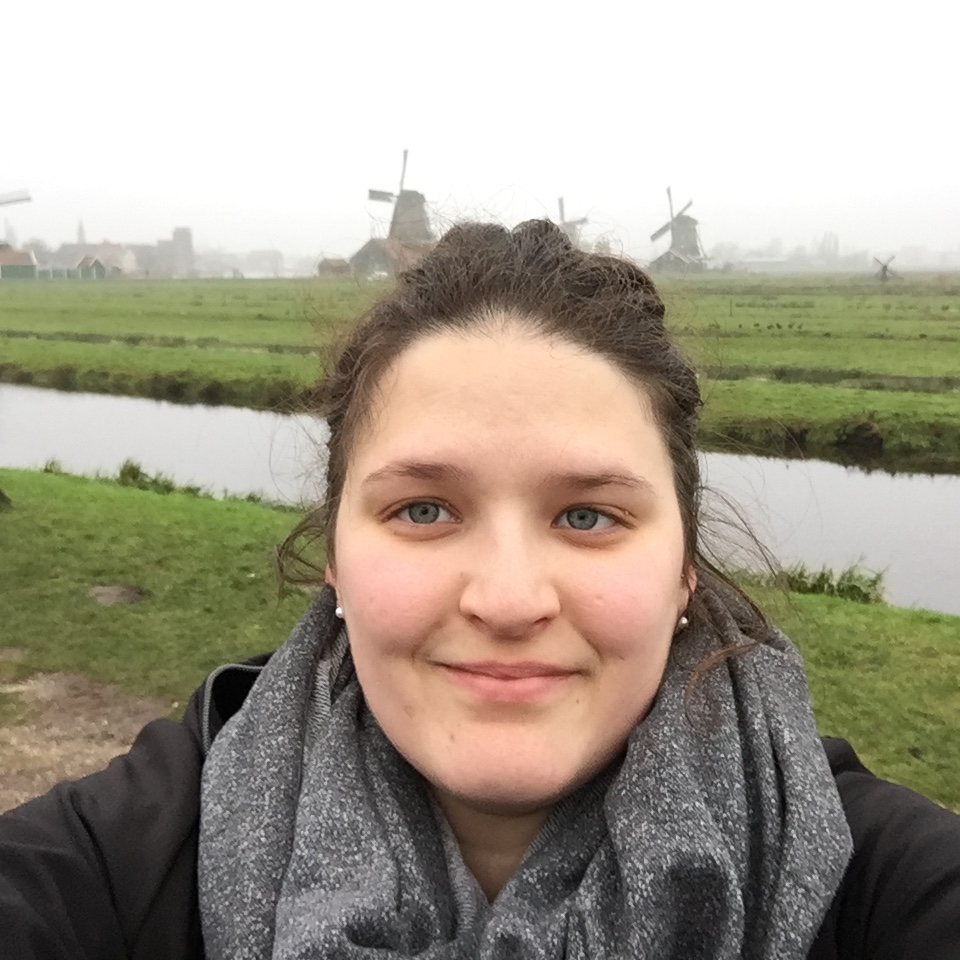

Je suis doctorante au Département des littératures de langue française à l’Université de Montréal, sous la supervision de Martine-Emmanuelle Lapointe. Je suis membre étudiante du CRILCQ.
Mes travaux portent sur l’enfance dans le roman québécois contemporain, et je m’intéresse particulièrement au rapport à la langue et à l’usage du langage dans la littérature, dans une perspective d’analyse du discours dans la narration littéraire. Mes recherches doctorales portent sur l’énonciation à titre de moteur de l’identité autre de plusieurs enfants du roman québécois.
J’ai également, sans avoir choisi d’en faire l’objet de mes recherches, un grand intérêt pour le numérique. J’ai, au fil du temps, des expériences et des lectures, développé des compétences et une réflexion autant techniques (quels outils choisir et comment les utiliser?) que critiques (enjeux du libre accès et du logiciel libre, sécurité informatique) par rapport au numérique et à son utilisation, notamment en milieu académique.
Dernière mise à jour: 02/01/2020